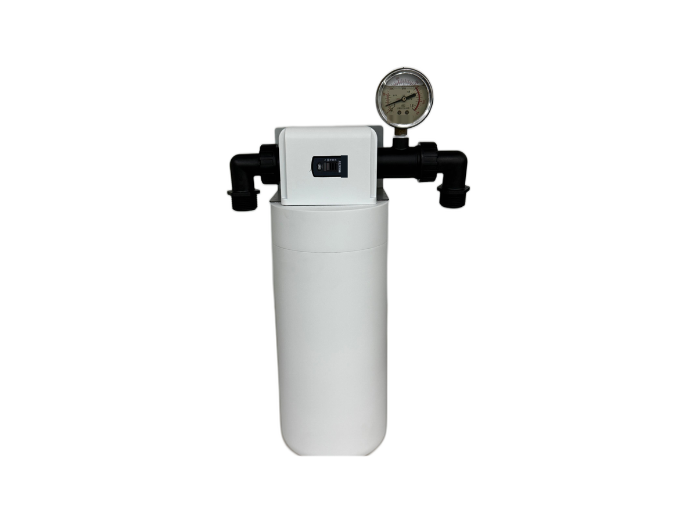

Untertisch
UntertischRP-U07
400–600-GPD-Untertisch-RO-Reiniger
SKU: RP-U07
MOQ: Auf Anfrage zu bestätigen
Startseite/Produkte/Untertisch-RO-Systeme/ RP-U17

Untertisch-RO-Systeme
Doppelgehäuse-Vorfilter mit hohem Durchfluss
RP-U17 — Doppelgehäuse-Vorfilter mit hohem Durchfluss. Hauptspezifikation: Kartusche format Großer Durchmesser, 10 Zoll. Spezifikationen werden pro Modell und Auftrag bestätigt.
Spannung / Frequenz ist je nach Zielland konfigurierbar. Andere Konfigurationen werden pro Auftrag bestätigt.
RP-U17 ist ein Doppelgehäuse-Vorfilter mit hohem Durchfluss, aufgebaut um eine 10-Zoll-Großdurchmesser-Kartusche. Das Hauptmodell kombiniert eine PP + Carbon + 60-g-KDF-Kartusche mit einer gerillten PP-Sedimentkartusche in einem lebensmitteltauglichen verstärkten PP-Gehäuse. Der Durchfluss beträgt ≥45,42 L/min bei 0,2 MPa durch 1-Zoll-Rohre, die Chlorentfernung ≥50 % bei 15 L/min mit einem Zulauf von 2 ±0,3 ppm, und das Referenz-Servicevolumen ≥189 Tonnen (Quell-Testwasser). Zwei weitere Vorfilter-Optionen sind verfügbar — siehe Varianten unten.
Wie hoch ist die Mindestbestellmenge?
Die erste Bestellung beträgt 200 Stück pro Modell, Nachbestellungen 500 Stück.
Kann ich vor einer Großbestellung ein Muster bestellen?
Ja. Muster sind in 15 Tagen fertig, und die Mustergebühr wird bei Ihrer ersten Großbestellung erstattet. Großbestellungen dauern 40 Tage nach Musterfreigabe und werden FOB Shenzhen versandt.
Welche Vorfilter-Variante soll ich wählen?
Als RP-U17 anfragen und die Variante angeben: Doppelgehäuse-KDF-Vorfilter, Variante aus gefaltetem PP + Kohlenstofffaser oder Variante aus gerillter PP-Watte. Die Variante aus gefaltetem PP + Kohlenstofffaser ist ein zweistufiger Eingehäuse-Vorfilter mit 33,3 L/min, 30000 L Servicevolumen und einer Kartuschenlebensdauer von 1–2 Jahren; die Variante aus gerillter PP-Watte ist nur mit Parametern gelistet und hat kein eigenständiges Produktfoto.
Drei Vorfilter-Optionen in der RP-U17-Familie — als RP-U17 anfragen und die Variante angeben (Doppelgehäuse-KDF, gefaltetes PP + Kohlenstofffaser oder gerillte PP-Watte).
Bewegen Sie die Maus über ein Variantenbild, um die Spezifikationen zu sehen. Auf Touchscreens tippen Sie auf ein Bild.

Vollständige Spezifikationen jeder Variante, nebeneinander. Die Spezifikationstabelle weiter unten zeigt die Werte von RP-U17.
| Spezifikation | RP-U17-1 — Doppelgehäuse-KDF | RP-U17-2 — Variante aus gefaltetem PP + Kohlenstofffaser | RP-U17-3 — Variante aus gerillter PP-Watte |
|---|---|---|---|
| Form | Vorfilter mit Doppelgehäuse | Vorfilter mit Einzelgehäuse | 10-Zoll-Jumbo-Kartusche |
| Filtermedium | PP + Carbon + 60 g KDF; gerilltes PP-Sediment | Gefaltetes PP + Kohlefaser | Silikon + PP + PP-Baumwolle |
| Filtrationsstufen | Je Auftrag bestätigt | 2 | Je Auftrag bestätigt |
| Durchfluss | ≥45.42 L/min bei 0.2 MPa; 1-Zoll-Rohre | 33.3 L/min | Je Auftrag bestätigt |
| Servicevolumen / Lebensdauer | ≥189 Tonnen (Quell-Testwasser) | 30000 L; Kartuschenlebensdauer 1–2 Jahre | Je Auftrag bestätigt |
| Abmessungen (L×B×H) | Je Auftrag bestätigt | 296 × 165 × 485 mm (mit Timer) | Je Auftrag bestätigt |
| Einbaumaß (Winkelanschlüsse) | — | 319 × 165 × 485 mm | — |
| Gehäuse | Lebensmittelechtes verstärktes PP | PP + Glasfaser | — (nur Kartusche) |
| Kartuschenanschluss | Je Auftrag bestätigt | Rotationsschweißen | — (nur Kartusche) |
| Chlorentfernung | ≥50 % bei 15 L/min; Zulauf von 2 ±0,3 ppm | Je Auftrag bestätigt | Je Auftrag bestätigt |
9 Spezifikationszeilen aus dem ROPureOEM-Katalog.
| Kartusche format | Großer Durchmesser, 10 Zoll |
|---|---|
| Carbon-Kartusche | PP + Kohle + 60 g KDF |
| Zweite Kartusche | Gerillter PP-Sedimentfilter |
| Gehäuse | Lebensmittelechtes verstärktes PP |
| Durchflusstest | ≥45.42 L/min bei 0.2 MPa; 1-Zoll-Rohre |
| Chlortest | ≥50 % bei 15 L/min; Zulauf von 2 ±0,3 ppm |
| Referenz-Servicevolumen | ≥189 Tonnen (Quell-Testwasser) |
| Spannung / Frequenz | An das Zielland anpassbar |
| Andere Konfigurationen | Je Auftrag bestätigt |
Die Spezifikationen stammen aus dem ROPureOEM-Katalog. Wenn ein Wert noch nicht bestätigt ist, wird er als „Je Auftrag bestätigt“ gelistet — wir veröffentlichen keine unbestätigten Zahlen.
Untertisch400–600-GPD-Untertisch-RO-Reiniger
SKU: RP-U07
MOQ: Auf Anfrage zu bestätigen
 Untertisch
UntertischUntertisch-RO mit Speicherheizung
SKU: RP-U08
MOQ: Auf Anfrage zu bestätigen
 Untertisch
UntertischLeistungsstarker RO-Reiniger mit Frontzugang
SKU: RP-U09
MOQ: Auf Anfrage zu bestätigen
 Untertisch
UntertischRO-Reiniger mit drei Kartuschen
SKU: RP-U11
MOQ: Auf Anfrage zu bestätigen